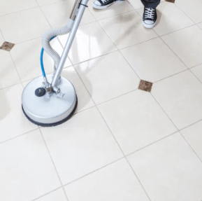

Inspect
Inspect tile, grout and stone type first
Professional stain removal in Church Stretton.
If you are looking for tile, grout & stone cleaning in Waterford, The Carpet Cleaning Company offers a professional quote first service backed by specialist equipment, dependable communication and visible results.

Inspect tile, grout and stone type first
Apply the right pre treatment for soil and build up
Deep clean grout lines and surface tiles
Rinse, dry and optional sealing
I was really impressed with the service. Very responsive, arrived on time and did an amazing job. Our furniture was very dirty but now looks and smells like new.
Bartlomiej HupaBought two sofas second hand and Vad did an amazing job cleaning them. Very professional, accommodating and well worth it for the great result.
Molly RathCustomers often book more than one service at the same time, especially when carpets, upholstery and hard floors all need attention.
Deep carpet cleaning for homes and businesses, removing embedded soil, marks and everyday wear with professional extraction equipment.
View pageSafe upholstery cleaning for sofas, armchairs and fabric seating using methods matched to the material and level of soiling.
View pageProfessional commercial cleaning to help remove dust, allergens, odours and marks for a fresher and healthier sleeping environment.
View page